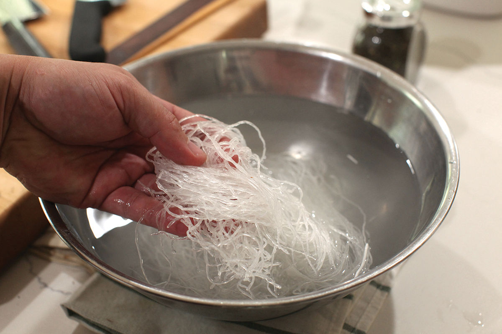
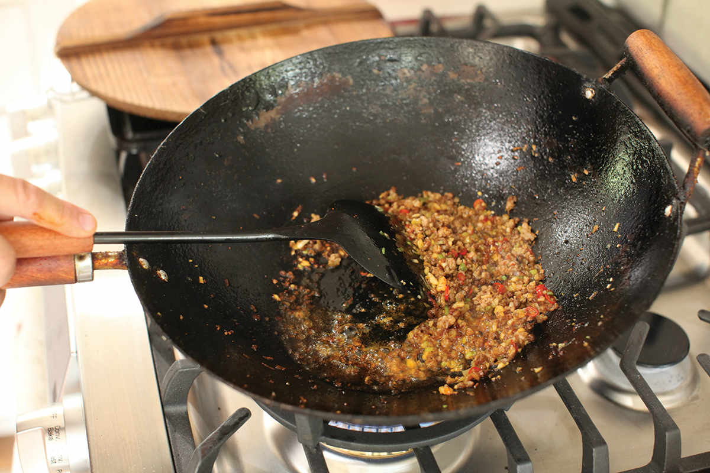
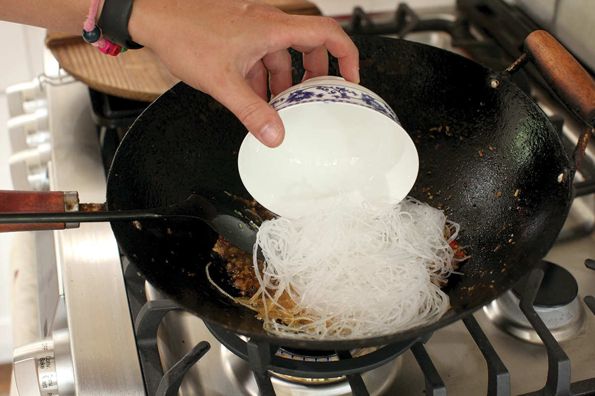
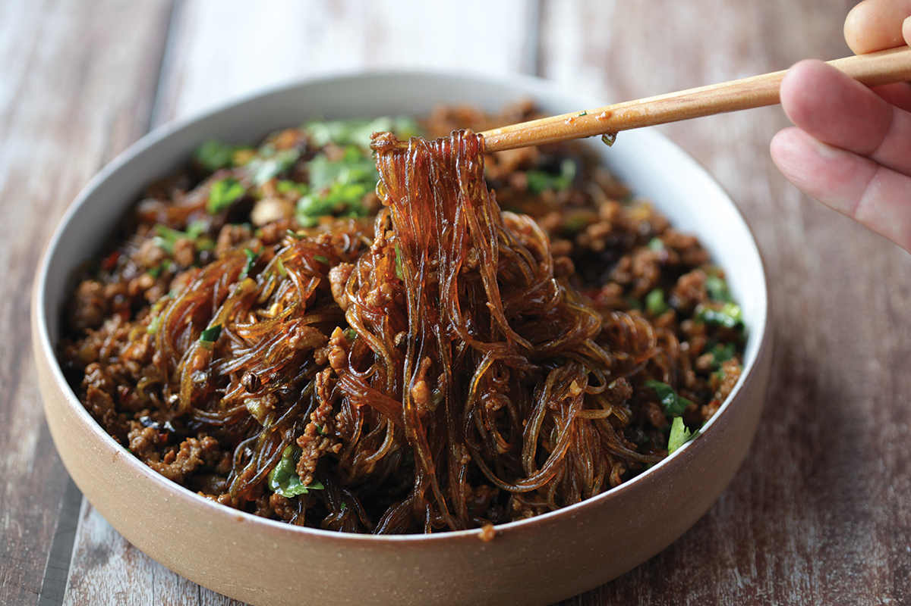

ANTS CLIMBING TREES (SICHUAN CELLOPHANE NOODLES WITH PORK AND CHILES)
|
Yield Serves 2 |
Active Time 15 minutes Total Time 30 minutes |
Bean thread noodles are also called cellophane noodles or glass noodles. Look for noodles made with mung bean starch. Red peppercorns can be used in place of green. Pick over your peppercorns to make sure there are no twigs or shiny black seeds. You can use store-bought or homemade hot pickled chiles (see the recipe on here) or use a fresh Thai bird, serrano, or jalapeño in its place. For best results, use Pixian doubanjiang imported from Sichuan. You can find it online or at a good Chinese supermarket.
INGREDIENTS
For the Noodles:
4 ounces (120 g) dry bean thread noodles (see Notes)
For the Sauce:
2 tablespoons (30 ml) light soy sauce
1 teaspoon (5 ml) dark soy sauce
1 teaspoon (4 g) sugar
½ cup (120 ml) homemade or store-bought low-sodium chicken stock or water
For the Stir-Fry:
¼ cup (60 ml) peanut, rice bran, soybean oil, or roasted rapeseed oil (caiziyou)
1 tablespoon (5 g) green Sichuan peppercorns (see Notes)
4 ounces (120 g) ground pork
4 teaspoons (10 g) minced garlic (about 4 medium cloves)
3 scallions, minced, a few tablespoons of greens reserved separately for garnish
1 pickled chile, minced (see Notes)
2 tablespoons (24 g) Sichuan broad bean chile paste (doubanjiang)
Small handful of chopped fresh cilantro
When it comes to evocative food names, it’s a toss-up between the Chinese and the British. For every Toad in the Hole, Rumbledethump, or Eaton Mess in the United Kingdom, there’s an Egg Flower Soup, Drunk Chicken, or Ants Climbing Trees in China. (Meanwhile we’re stuck with good ol’ Spam, Rocky Mountain Oysters, and S&%t on a Shingle here in the United States).
When I worked as a test cook at Cook’s Illustrated, about once a week some of my fellow test cooks and I would take a trip to Sichuan Garden on Washington Street in Brookline Village (it’s since been converted to the trendy Blossom Bar, where the original owner’s son has kept the Sichuan menu, even with its new cocktail-forward, clubby vibe) where we’d order plates of beef tripe in a roasted chile vinaigrette, dry-fried green beans, and ma yi shang shu—Ants Climbing Trees—a dish so-named because of the way little bits of pork cling to the cellophane noodles as you lift them.
There are two variations of this dish, a drier version in which the noodles are very briefly stir-fried in oil flavored with pork, Sichuan pepper, Sichuan broad bean chile paste (doubanjiang), soy sauce, and aromatics, and a wet version that starts the same way but includes a good amount of chicken stock for the noodles to simmer in. The dry version can be quite difficult to manage (bean thread noodles tend to get very clumpy and sticky), so I usually go for the wet version. I love the way the noodles absorb the broth and turn almost jelly-like while still retaining their elastic chew.
DIRECTIONS
1 For the Noodles: Place the noodles in a bowl and cover with very hot water. Let soak until pliable and tender, about 15 minutes. Drain and set aside.
2 For the Sauce: Combine the soy sauces, sugar, and chicken stock in a small bowl and stir until the sugar is dissolved.
3 BEFORE YOU STIR-FRY, GET YOUR BOWLS READY:
- a. Sichuan peppercorns
- b. Pork
- c. Garlic, scallions, pickled chile, and broad bean chile paste
- d. Sauce
- e. Noodles
- f. Serving platter
4 For the Stir-Fry: Heat the oil in a wok over high heat until shimmering. Add the Sichuan peppercorns and cook, stirring, until fragrant, about 10 seconds. Immediately add the pork and stir-fry until the pork is cooked through and starting to brown lightly in spots, about 2 minutes.




5 Add the garlic, scallions, pickled chile, and broad bean chile paste and stir-fry until fragrant and the fat has become a deep red, about 45 seconds. Add the sauce.
6 When the sauce is simmering, add the noodles to the wok, laying them on top of the pork. Let them rest without moving for 30 seconds to absorb some of the sauce, then gently lift and fold the noodles and sauce on the bottom over the top. Do not stir too vigorously or the noodles may become sticky. When the sauce is mostly absorbed and reduced, fold in the reserved scallions greens and chopped cilantro. Transfer to a serving platter and serve.